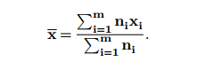
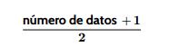
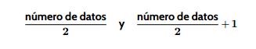

Media
La media, que normalmente se escribe \(\bar{x}\) , es el promedio de todos los datos.
Cuando los datos se presentan en una tabla de frecuencias, la media se calcula como:

Moda
La moda, que se suele representar como Mo, es el valor o valores (cuantitativos o cualitativos) que más se repiten en un estudio. Si partimos de una tabla de frecuencias, calcular la moda es tan sencillo como indicar cuál es el dato o los datos que aparecen con mayor frecuencia.
Mediana
La mediana, que usualmente la veremos como Me, nos indica el valor que es mayor que la mitad de los datos y menor que la otra mitad. Para calcularla, primero
tendremos que ordenar de menor a mayor todos los valores obtenidos en el estudio, y la mediana será aquel que ocupe la posición central. Tenemos dos casos según el número de datos:
- Si el número de datos es impar, la mediana será el dato que ocupe la posición

- Si el número de datos es par, no tendremos un dato central como tal. En su lugar, tomaremos los dos valores centrales, es decir, los que ocupen las posiciones

Una vez hayamos encontrado estos valores, la mediana será la media de los dos, es decir, la mitad de su suma.
Afianza los contenidos
Relaciona cada tarjeta con su pareja.
Relaciona cada tarjeta con su pareja.
","showMinimize":false,"itinerary":{"showClue":false,"clueGame":"","percentageClue":40,"showCodeAccess":false,"codeAccess":"","messageCodeAccess":""},"cardsGame":[{"url":"","x":0,"y":0,"author":"","alt":"","audio":"","color":"#000000","backcolor":"#ffffff","eText":"2%2C%203%2C%203%2C%205%2C%204","urlBk":"","xBk":0,"yBk":0,"authorBk":"","altBk":"","audioBk":"","colorBk":"#000000","backcolorBk":"#ffffff","eTextBk":"Media%20%3D%203.4%2C%20Mediana%20%3D%203%2C%20Moda%20%3D%203"},{"url":"","x":0,"y":0,"author":"","alt":"","audio":"","color":"#000000","backcolor":"#ffffff","eText":"1%2C%202%2C%202%2C%202%2C%203%2C%204","urlBk":"","xBk":0,"yBk":0,"authorBk":"","altBk":"","audioBk":"","colorBk":"#000000","backcolorBk":"#ffffff","eTextBk":"Media%20%E2%89%88%202.33%2C%20Mediana%20%3D%202%2C%20Moda%20%3D%202"},{"url":"","x":0,"y":0,"author":"","alt":"","audio":"","color":"#000000","backcolor":"#ffffff","eText":"5%2C%203%2C%204%2C%206%2C%202","urlBk":"","xBk":0,"yBk":0,"authorBk":"","altBk":"","audioBk":"","colorBk":"#000000","backcolorBk":"#ffffff","eTextBk":"Media%20%3D%204%2C%20Mediana%20%3D%204%2C%20Moda%20%3D%20no%20hay"},{"url":"","x":0,"y":0,"author":"","alt":"","audio":"","color":"#000000","backcolor":"#ffffff","eText":"7%2C%207%2C%208%2C%206%2C%209%2C%207","urlBk":"","xBk":0,"yBk":0,"authorBk":"","altBk":"","audioBk":"","colorBk":"#000000","backcolorBk":"#ffffff","eTextBk":"Media%20%E2%89%887.33%2C%20Mediana%20%3D%207%2C%20Moda%20%3D%207"},{"url":"","x":0,"y":0,"author":"","alt":"","audio":"","color":"#000000","backcolor":"#ffffff","eText":"10%2C%2012%2C%2011%2C%2013%2C%2014","urlBk":"","xBk":0,"yBk":0,"authorBk":"","altBk":"","audioBk":"","colorBk":"#000000","backcolorBk":"#ffffff","eTextBk":"Media%20%3D%2012%2C%20Mediana%20%3D%2012%2C%20Moda%20%3D%20no%20hay"},{"url":"","x":0,"y":0,"author":"","alt":"","audio":"","color":"#000000","backcolor":"#ffffff","eText":"4%2C%204%2C%205%2C%205%2C%206%2C%206%2C%207","urlBk":"","xBk":0,"yBk":0,"authorBk":"","altBk":"","audioBk":"","colorBk":"#000000","backcolorBk":"#ffffff","eTextBk":"Media%20%3D%205.57%2C%20Mediana%20%3D%205%2C%20Moda%20%3D%204%2C%205%2C%206"}],"isScorm":0,"textButtonScorm":"Guardar la puntuación","repeatActivity":true,"weighted":100,"textAfter":"","version":2,"percentajeCards":100,"type":0,"showSolution":true,"timeShowSolution":3,"time":3,"evaluation":false,"evaluationID":"20251220234905EHAZGV","id":"20251221023738504J06","msgs":{"msgSubmit":"Enviar","msgClue":"¡Genial! La pista es:","msgCodeAccess":"Código de acceso","msgPlayStart":"Pulse aquí para jugar","msgScore":"Puntuación","msgErrors":"Errores","msgHits":"Aciertos","msgMinimize":"Minimizar","msgMaximize":"Maximizar","msgFullScreen":"Pantalla Completa","msgExitFullScreen":"Salir del modo pantalla completa","msgNoImage":"Pregunta sin imágenes","msgEndGameScore":"Antes de guardar la puntuación comience la partida.","msgScoreScorm":"La puntuación no se puede guardar porque esta página no forma parte de un paquete SCORM.","msgOnlySaveScore":"¡Solo puede guardar la puntuación una vez!","msgOnlySave":"Solo puede guardar una vez","msgInformation":"Información","msgYouScore":"Su puntuación","msgAuthor":"Autoría","msgOnlySaveAuto":"Su puntuación se guardará después de cada pregunta. Solo puede jugar una vez.","msgSaveAuto":"Su puntuación se guardará automáticamente después de cada pregunta.","msgSeveralScore":"Puede guardar la puntuación tantas veces como quiera","msgYouLastScore":"La última puntuación guardada es","msgActityComply":"Ya ha realizado esta actividad.","msgPlaySeveralTimes":"Puede realizar esta actividad cuantas veces quiera","msgClose":"Cerrar","msgAudio":"Audio","msgNumQuestions":"Número de tarjetas","msgTryAgain":"Necesitas al menos %s% de respuestas correctas para obtener la información. Inténtalo de nuevo.","msgEndGameM":"Has completado el juego. Tu puntuación es %s.","msgUncompletedActivity":"Actividad no completada","msgSuccessfulActivity":"Actividad superada. Puntuación: %s","msgUnsuccessfulActivity":"Actividad no superada. Puntuación: %s","msgTypeGame":"Relaciona","msgCheck":"Comprobar","msgRestart":"Reiniciar"}}